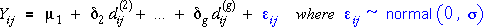

Combining the models for the groups
Our model for data in g groups is of the form,
where Yij denotes the j'th of the ni
response measurements in group i.
Although this model does not initially appear to be a general linear model
(GLM), it can be expressed as a GLM using indicator variables.
Note that this GLM does not have a constant term (intercept).
Matrix representation of the model
The next diagram shows this general linear model in matrix form for a data
set with 3 observations in each of 4 groups.

Click on any y-value to see how the indicator variables pick out the appropriate
mean for its group.
Baseline group
Although this is the most obvious way to describe the normal model for data
in g groups as a GLM, a different parameterisation makes it easier
to test for equal group means.
A different way to express the model is more useful.
We first pick one category as a 'baseline' category. In experimental data,
one category may be a Control group (with no experimental treatment) and this
is often used as a baseline category. In other situations, the choice of a
baseline category is often arbitrary; we then usually treat the first category
as the baseline.
Parameterisation of model in terms of differences from baseline
The mean for the baseline category will be the first parameter in our new
parameterisation. For each other category, a parameter will give the difference
between its group mean and the baseline mean. If we use the first category
as baseline, we therefore express the means for the other categories as:
In terms of these new parameters, the model is:

where the dij are the same indicator variables that were
used before, but the model no longer has one for the first group.
Note that we now have a constant term in the GLM, µ1,
so the first column of the X matrix is a column of 1's. The other columns
of X are the same as before.
Matrix representation of the model
The next diagram shows this general linear model in matrix form.
Click on any y-value to see how the indicator variables give the correct
means for all groups.